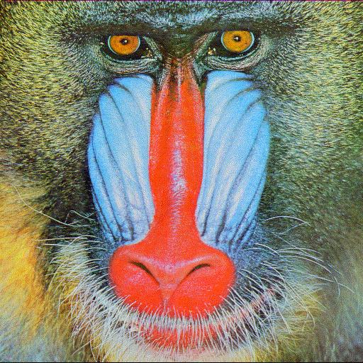
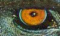
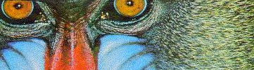

Changing Brightness
To adjust image brightness, we simply scale each pixel RGB value by a positive factor α, When α is 0, we get a pure black image, when α is 1 we get the original image back. In other words, if we want to darken the image, we interpolate between black and the current pixel values. If we want to brighten the image, we extrapolate between black and the current pixel values.
-
α = 0.0

Black Image -
0.5
-
1.0

Input Image -
1.5
-
2.0
Example Usage:
$ ./image -brightness 1.5 <input.bmp >.out.bmp
Changing Contrast
Changing Saturation
Changing Gamma
Cropping Images
This allows one to crop the image, for instance to focus on a mandrill’s eye or nose as shown in the cropped picture below. The algorithm works by copying pixels at appropriate positions based on the offset x and y from a contiguous 1d array in the original image to a new image with newly specified width and height. We assume that x ranges from 0 to width-1 from left to right and y from 0 to height-1 from top to bottom. w and h are the size of the cropped image.
-
Original Image (512 x 512)
-
Cropped Image: x=0, y=0, w=512, h=512
-
Cropped Image: x=120, y=35, w=100, h=60
-
Cropped Image: x=160, y=80, w=180, h=370
Below shows how we handle some interesting edge cases:
- Case 1: If any of x, y, w, or h are negative, the output is a black image with dimension x, y is output.
- Case 2: If cropped image dimension exceeds original image bounds, that is if cropping parameter w, h larger than the original image height and width. Then the cropped image will only contain the captured portion of the original image, i.e. cropped_image_max_height = original_image_height - y
- Case 3: If w or h are 0 then the output image contains nothing.
-
Case 1: x=-160, y =-80, w=100, h=100
-
Case 2: x = 150, y = 50, w=15000, h=100
Example Usage:
$ ./image -crop 150 50 100 100 <input.bmp >.out.bmp